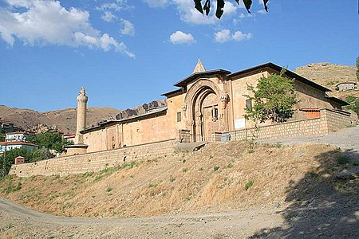

Divriği ilçesindeki tarihi cami ve hastane. Cami 1228–29 yıllarında Mengücekli beyi Ahmed Şah tarafından; Dârüşşifa ise aynı tarihte, Ahmed Şah'ın eşi ve Erzincan beyi Fahreddin Behramşah’ın kızı olan Turan Melek tarafından Ahlatlı Muğis oğlu Hürrem Şah adlı bir mimara yaptırılmıştır.Darüşşifa caminin güney duvarına dayanmıştır. Orta bölümü bir ışıklık kubbesi ile örtülmüştür, giriş ile birlikte dört eyvandan oluşur. Darüşşifanın kuzeydoğu köşesinde türbe yer alır. Divriği Ulu Cami ve Darüşşifası 1985 yılında UNESCO Dünya Miras Listesine alınarak Türkiye'den listeye giren ilk mimari yapı olmuştur
Kapıda beliren insan silüeti

Caminin giriş kapısına ikindi güneşi düştüğü zaman gölgelerden oluşmuş, ayakta duran, yandan bir erkek silüeti belirir. Bu silüetin önünde dikdörtgene benzer bir gölge daha vardır. Bu gölgelerin Kur'an okuyan ve namaz kılan bir adam olduğuna inanılır.
Evliya Çelebi bu eser için şöyle demiştir: "Üstad, mermer bu camiye öyle emek sarf edip, kapı ve duvarları öyle nakış bukalemun eylemiş ki, methinde diller kısır, kalem kırıktır."

Harim mihraba dik beş sahından oluşur. Orta sahın diğerlerinden geniştir. Burada yer alan dilimli mihrap önü kubbesi dıştan kümbete benzeyen piramit bir örtü ile örtülmüş ve dışarıdan da camiye hakim bir hale getirilmiştir. Orta sahında bir ışıklık yer alır. Işıklık kubbesine geçişte yelpaze biçimli Türk üçgenleri kullanılmıştır. Camide sahınların hepsi birbirinden farklı yıldız tonozlarla örtülmüştür. Bu camide hem Selçukluların avlulu plan tipi, hem de Emevi plan tipini bir arada görmek mümkündür.
Plan tipi ve süsleme olarak benzeri olmayan bir eserdir. Aralarında üslup birliği olmayan üç portalin süslemeleri birbirinden farklıdır. İki başlı kartal motifini de içeren süslemeler son derece taşkın ve barok karakterlidir. Batı portalinde Alaaddin Keykubad’ın arması olan çift başlı kartal ile Ahmet Şahın arması doğan motifi bulunur.
Bugün kirişleme izleri kalmış olan ahşap hünkar mahfili Anadolu’daki en erken örneklerden biridir. Abanoz ağacından minber, kabartma sülus yazı kuşakları ve yıldız motifleri büyük bir özenle yapılmıştır. Yapının taşkın barok karakterli ve iri palmetlerle bezeli mihrabı da önemli bölümlerindendir. Caminin doğu cephesindeki pencerenin (özgününde bey mahfili kapısının) üzerinde Ahlatlı nakkaş Ahmed, minberde Tiflisli İbrahim oğlu Ahmed ve hattat Mehmed, caminin güney duvarındaki âyet şeridi üzerinde Mehmed oğlu Ahmed’in adları yazılıdır. Divriği Ulu Cami ve Dârüşşifası, Selçuklu dönemi içinde küçük sayılabilecek yapı topluluklarından biri olmasına karşın, altı sanatçısı ile dikkat çekicidir. Bu bağlamda yapı topluluğu, Selçukluların yanı sıra Mengücekli çevresinde de ekip çalışmasının ve toplam kalite anlayışının varlığını gösteren önemli bir örnektir